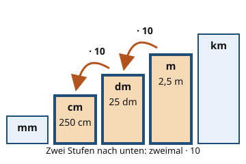

Einheiten umrechnen
Mit einem KI-Tutor lernen
Ein KI-Tutor erklärt dir diese Seite und hilft dir bei den Aufgaben. Wähl deinen Assistenten:
Mit Claude öffnen Mit ChatGPT öffnen Mit Mistral Vibe öffnen
Du nutzt dein eigenes Konto beim Anbieter. Der Assistent ist kein Angebot von lernapps.net: lernapps liefert nur Inhalte und Aufgaben. Die Wahl gilt für alle Seiten, nur auf diesem Gerät.
Was du hier lernst
Wenn eine Länge in Kilometern angegeben ist, du aber in Metern rechnen willst, musst du die Einheit wechseln. Nach dieser Seite rechnest du Größen in andere Einheiten um und wählst die passende Einheit. Das kennst du von den Stellen unserer Zahlen. Dafür benutzt du gleich eine Treppe aus Einheiten: Jede Stufe ist eine Einheit, und zwischen zwei Stufen steht, wie oft die kleinere Einheit in die größere passt.
Aufgabe
Lösung
30 cm
30 cm sind nur ein Zehntel von 3 m. In einen Meter passen mehr als 10 Zentimeter.
300 cm richtige Antwort
1 m sind 100 cm, also sind 3 m dreimal so viel: 300 cm.
3000 cm
3000 cm wären 30 m. Das ist zehnmal zu viel.
30 000 cm
30 000 cm wären 300 m. Das ist hundertmal zu viel.
Ein Meter hat 100 Zentimeter. Drei Meter sind dreimal so lang.
Die Einheitentreppe zeigt den Faktor
Wenn du von einer Einheit zu einer anderen willst, zum Beispiel von m zu cm, hilft dir eine feste Zahl. Eine Einheit passt in die nächste Einheit eine feste Zahl von Malen hinein. Diese Zahl steht an der Treppe. Gehst du nach unten zur kleineren Einheit, nimmst du mal. Gehst du nach oben zur größeren Einheit, teilst du. Das ist wie bei der Stellenwerttafel: Das Komma wandert.
 © CC-BY-4.0
© CC-BY-4.0Auf jeder Stufe steht, wie viele Einheiten der Stufe links daneben hineinpassen.
- Einheitentreppe
Die Einheitentreppe ordnet die Einheiten einer Größe von klein nach groß. Zwischen zwei Stufen steht, wie oft die kleinere in die größere passt.
| Größe | Umrechnung |
|---|---|
| Masse | 1 kg = 1000 g, 1 t = 1000 kg |
| Geld | 1 € = 100 ct |
| Zeit | 1 h = 60 min, 1 min = 60 s |
Merke
Bei der Zeit passt die Treppe nicht: Hier ist der Faktor 60, nicht 10. Rechne bei Zeitspannen nie mit Zehnern.
Beispiel
Von Meter zu Zentimeter
Wie viele Zentimeter sind 2,5 m? Du startest auf der Stufe m und gehst zwei Stufen nach unten bis cm. Bei jeder Stufe nimmst du mal 10, siehe die Pfeile im Bild. So kommst du von 2,5 m über 25 dm zu 250 cm.

© CC-BY-4.0Der Weg von m nach cm. Jeder Pfeil bedeutet eine Stufe nach unten und mal 10.
Übung
Aufgabe
Lösung
Zentimeter
Mit Zentimetern misst du kleine Dinge wie einen Bleistift. Ein Fußballfeld hätte dann eine sehr große Zahl.
Meter richtige Antwort
Ein Fußballfeld ist etwa 100 m lang. Die Zahl ist handlich.
Kilometer
Ein Kilometer sind 1000 m, zehn Fußballfelder hintereinander. Für ein Feld wäre die Zahl sehr klein.
Wähle die Einheit so, dass die Zahl handlich ist. Ein Fußballfeld misst du in Metern.
Aufgabe
Drei Beispielaufgaben, jede mit ihrer Lösung:
Aufgabe Nr. 1
Rechne in Zentimeter um: 0,4 m.
Tipp
Von m nach cm gehst du zwei Stufen nach unten. Jede Stufe ist mal 10.
Lösung
- Von m nach cm sind es zwei Stufen nach unten: mal 100.
- .
Richtige Antwort: 40 cm
Aufgabe Nr. 2
Rechne in Zentimeter um: 1,5 m.
Tipp
Von m nach cm gehst du zwei Stufen nach unten. Jede Stufe ist mal 10.
Lösung
- Von m nach cm sind es zwei Stufen nach unten: mal 100.
- .
Richtige Antwort: 150 cm
Aufgabe Nr. 3
Rechne in Zentimeter um: 2,5 m.
Tipp
Von m nach cm gehst du zwei Stufen nach unten. Jede Stufe ist mal 10.
Lösung
- Von m nach cm sind es zwei Stufen nach unten: mal 100.
- .
Richtige Antwort: 250 cm
Aufgabe
Drei Beispielaufgaben, jede mit ihrer Lösung:
Aufgabe Nr. 1
Rechne in Gramm um: 2,5 kg.
Tipp
1 kg sind 1000 g. Wie viele Gramm sind 2,5 kg?
Lösung
- 1 kg sind 1000 g.
- .
Richtige Antwort: 2500 g
Aufgabe Nr. 2
Rechne in Gramm um: 3,75 kg.
Tipp
1 kg sind 1000 g. Wie viele Gramm sind 3,75 kg?
Lösung
- 1 kg sind 1000 g.
- .
Richtige Antwort: 3750 g
Aufgabe Nr. 3
Rechne in Gramm um: 1,2 kg.
Tipp
1 kg sind 1000 g. Wie viele Gramm sind 1,2 kg?
Lösung
- 1 kg sind 1000 g.
- .
Richtige Antwort: 1200 g
Aufgabe
Drei Beispielaufgaben, jede mit ihrer Lösung:
Aufgabe Nr. 1
Rechne in Minuten um: 2 h 50 min.
Tipp
Eine Stunde hat 60 Minuten. Wie viele Minuten sind 2 Stunden?
Lösung
- 2 h sind .
- Dazu 50 min: .
Richtige Antwort: 170 min
Aufgabe Nr. 2
Rechne in Minuten um: 5 h 5 min.
Tipp
Eine Stunde hat 60 Minuten. Wie viele Minuten sind 5 Stunden?
Lösung
- 5 h sind .
- Dazu 5 min: .
Richtige Antwort: 305 min
Aufgabe Nr. 3
Rechne in Minuten um: 2 h 45 min.
Tipp
Eine Stunde hat 60 Minuten. Wie viele Minuten sind 2 Stunden?
Lösung
- 2 h sind .
- Dazu 45 min: .
Richtige Antwort: 165 min
Das kannst du jetzt
- Größen mit Stützpunkten schätzen und prüfen, ob ein Ergebnis zur Sache passt,
- Länge, Masse, Geld und Zeit messen und damit rechnen,
- Einheiten mit der Einheitentreppe umrechnen und bei der Zeit den Faktor 60 nutzen.
Aufgabe
Drei Beispielaufgaben, jede mit ihrer Lösung:
Aufgabe Nr. 1
Rechne in Meter um: 85 cm.
Tipp
Von cm nach m gehst du zwei Stufen nach oben. Jede Stufe ist durch 10.
Lösung
- Zwei Stufen nach oben: durch 100.
- .
Richtige Antwort: 0,85 m
Aufgabe Nr. 2
Rechne in Meter um: 40 cm.
Tipp
Von cm nach m gehst du zwei Stufen nach oben. Jede Stufe ist durch 10.
Lösung
- Zwei Stufen nach oben: durch 100.
- .
Richtige Antwort: 0,4 m
Aufgabe Nr. 3
Rechne in Meter um: 175 cm.
Tipp
Von cm nach m gehst du zwei Stufen nach oben. Jede Stufe ist durch 10.
Lösung
- Zwei Stufen nach oben: durch 100.
- .
Richtige Antwort: 1,75 m
Aufgabe
Drei Beispielaufgaben, jede mit ihrer Lösung:
Aufgabe Nr. 1
Rechne in Euro um: 305 ct.
Tipp
1 € sind 100 ct. Wie viele Euro sind 305 ct?
Lösung
- 1 € sind 100 ct.
- .
Richtige Antwort: 3,05 €
Aufgabe Nr. 2
Rechne in Euro um: 250 ct.
Tipp
1 € sind 100 ct. Wie viele Euro sind 250 ct?
Lösung
- 1 € sind 100 ct.
- .
Richtige Antwort: 2,5 €
Aufgabe Nr. 3
Rechne in Euro um: 1275 ct.
Tipp
1 € sind 100 ct. Wie viele Euro sind 1275 ct?
Lösung
- 1 € sind 100 ct.
- .
Richtige Antwort: 12,75 €
Fehler gefunden oder eine Idee für diese App?